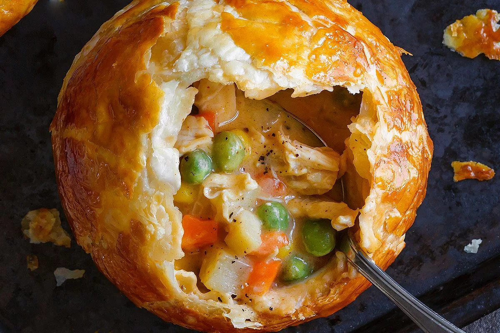

Chicken Pot Pie

Creamy Chicken Pot Pie
Rich, flavorful with a golden brown crispy crust, these individual chicken pot pies are perfect when you’re looking for a comforting meal. Seriously delicious!
Ingredients
- 2 lb (900g) boneless, skinless cooked chicken, shredded
- Salt and freshly ground black pepper, to taste
- 4 tablespoons unsalted butter, at room temperature
- 4 tablespoons all-purpose flour
- 2 cups chicken broth, good-quality
- 1/2 lb potato, cut into small cubes
- 1 medium yellow onion, peeled and diced
- 2 cloves garlic, minced
- 1/2 cup carrot, peeled and cut into small cubes
- 1/2 cup frozen pea or shelled fresh peas
- 1/2 cup frozen or fresh corn
- 1/2 cup chopped green beans, fresh or frozen
- Cayenne pepper, optional, to taste
- 2 tablespoons heavy cream
- 1 good quality puff pastry sheet, thawed
- 1 egg, beaten
Steps
- Melt butter in a large saucepan or pot. Add flour and whisk constantly to form a roux, without any lump. Add chicken broth and continue whisking for 2-3 minutes, until the sauce is smooth and thickened.
- Adjust seasoning with salt, pepper and Cayenne pepper, add the cream and stir to combine. Add shredded chicken, diced potato, garlic, onion, and all vegetables to the sauce and give a good stir to combine everything. Cook on medium-low for 2-3 minutes, adjust seasoning if necessary.
- Transfer the filling into a clean container and chill in the fridge for one hour, or until cool. In the meantime, preheat your oven to 400°F (200°C).
- On a lightly floured surface, roll out the puff pastry sheet and dust with flour to prevent sticking. Use a bowl or small plate of 1-inch (2 ½ cm) larger than the ramekins to cut out your pastry with a sharp knife.
- Spoon the chilled chicken filling into the ramekins and sprinkle with additional black pepper. Brush the exterior edges of the ramekins with the beaten egg and cover with a disc of puff pastry. Fold over the edges and press lightly against the edge of the ramekin with your fingers. Brush the top and sides of the pastry with the beaten egg. Repeat the process for all ramekins.
- Transfer the ramekins to a baking sheet and bake in the oven at 400°F (200°C) on the rack positioned in the middle of the oven for about 20-30 minutes, or until the pastry is puffed and golden brown. Let cool for 5 minutes before serving. Enjoy!